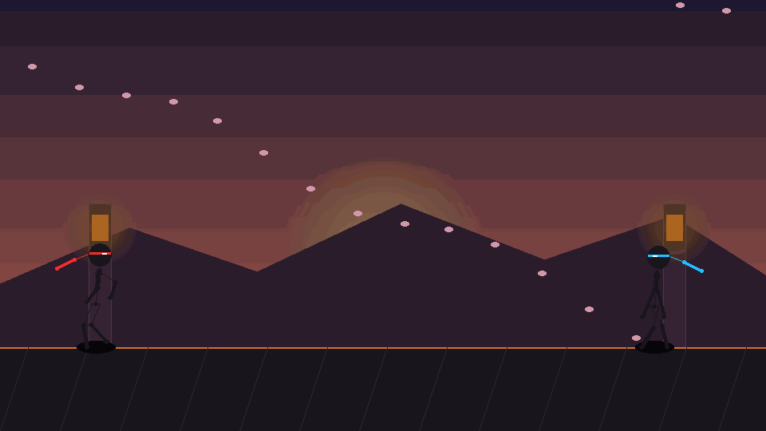
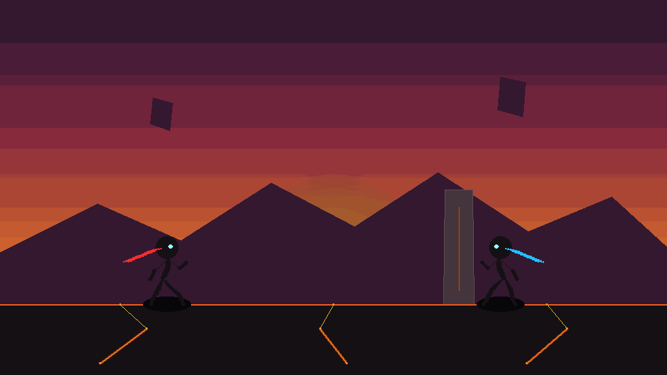

The Challenge: Why AI Animation Often Looks "Stiff"
When Large Language Models or Python agents author 2D drawings by default, they frequently fall into a predictable trap: generating rigid lines with uniform angular spacing and sliding positions. Even when stick figures are drawn with articulated segments, characters often end up sliding across the ground like cardboard cutouts, popping abruptly between keyframed poses without weight or inertia.
With Pencil2D MCP v0.4.0, we set out to eliminate stiffness entirely by integrating the physics and kinematics used in high-tier martial arts animation (such as Hyun's Dojo and Alan Becker) into a mathematical, reproducible Python engine.

24 FPS Fluid Stickman Kinematics (240 Frames) — Featuring grounded gait foot planting, passing leg clearance, and circular Wing Chun hand deflections.
1. Analytic 2-Bone Inverse Kinematics (IK)
Rather than guessing knee or elbow coordinates through manual offset magic numbers, solve_2bone_ik() computes exact joint angles using trigonometry and the Law of Cosines:
cos(α) = (L₁² + d² - L₂²) / (2 · L₁ · d)
joint_angle = base_angle ± α
By clamping target distance to the natural reach boundary (abs(L₁ - L₂) < d < L₁ + L₂), limbs never hyper-extend, pop, or stretch unnaturally. Both thighs and calves maintain constant pixel lengths throughout the entire 10-second sequence.
2. Grounded Bipedal Locomotion Engine
Authentic human and character locomotion adheres to distinct phases of ground support:
- Stance Phase (60% of stride): The supporting foot locks firmly to the ground coordinates (
y = ground_y) as the pelvis moves forward over it. This completely eliminates ice-skating foot slides. - Swing Phase (40% of stride): The swing leg bends at the knee, clears the floor in a smooth parabolic arc, and extends forward heel-first.
- Double-Frequency Pelvic Bounce: The pelvis bobs down upon double-support contact and rises during the passing position.
- Spinal Lean & Arm Counter-Swing: The torso dynamically tilts forward into the movement vector, while arms swing in counter-phase with natural elbow flexion.

24 FPS Ultimate Sakuga Combat — Destructible stone pillars, flaming katana, sliced boulders, inverted impact frames, and camera shake.
3. Continuous Pose Interpolation (Zero Teleporting)
Transitions between actions (standing, walking, running, crouching, and kicking) are blended continuously using cubic Hermite smoothstep curves (s(t) = 3t² - 2t³) across all 15 joints. Every joint trajectory is C¹ continuous—ensuring no single-frame teleport jumps occur.
4. Expanded MCP Toolset: 17 Tools Total
Version 0.4.0 also adds three powerful new tools:
pencil2d_look: Generates visual contact strips (filmstrips with optional onion skinning) so AI agents verify visual quality headlessly without a graphical desktop.pencil2d_generate_animation: Generates stylized animation presets across 5 distinct aesthetics: Stickman, Anime, Pencil Sketch, Studio Ghibli, and Doodle.pencil2d_get_guide: Provides on-demand craft instructions directly to the LLM covering the 12 principles of animation, line-of-action kinematics, and timing charts.
Try It Out Today
Upgrade to v0.4.0 directly via PyPI:
pip install --upgrade pencil2d-mcp